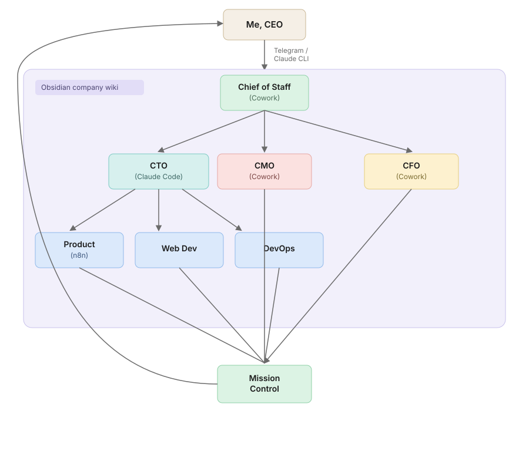

Iris Briefings
An AI-agent-run company — a team of Claude agents with their own roles, wiki, and inboxes, running the business day to day.
Quick note: this is an AI-generated posting, requested by Joe, to get something up documenting the work on Iris while the fuller writeup is still in progress.
Iris Briefings is a company I've been building that's run almost entirely by AI agents. I'm the CEO, but the day-to-day — strategy, engineering, marketing, finance, ops — is handled by a team of Claude agents, each with their own role, that coordinate with each other rather than with me directly. The full story, and what Iris actually does, lives on the about page — that's the best place to start. I'll be writing more here about how the agent company itself is built as the project develops.
An AI-run company structure
Instructions flow down from me to a Chief of Staff agent (running in Cowork), which I talk to over Telegram or the Claude CLI. From there, the Chief of Staff delegates to a CTO (Claude Code), a CMO, and a CFO (both Cowork), each of whom run their own reports — Product on n8n, Web Dev, and DevOps sit under the CTO. Everything converges on a shared Mission Control, and results flow back up to me.

The part I find most interesting isn't the org chart itself, it's how the agents actually coordinate. There's no shared codebase of state the way a normal app would have — instead, every agent reads and writes to a shared Obsidian company wiki, and sends messages to each other through individual agent inboxes. An agent picks up its inbox, checks the wiki for context, does its work, updates the wiki, and messages whoever needs to know next. It's a slower, more legible substitute for the kind of shared memory a single process would have, and it means I can go back and read exactly what any agent knew and decided at any point.
What it's built with
Roughly the stack and skills that went into this, in no particular order:
- Agentic tooling — Claude Code and Cowork running the actual agent roles, coordinating through MCP servers
- Company wiki & comms — an Obsidian vault as the shared company wiki, with per-agent inboxes for message passing between roles
- Workflow automation — n8n for the Product function and other scheduled/triggered work
- Research — SERP API, Tavily, and Exa for web search and information gathering
- Media generation — image gen-AI, ffmpeg for video/audio processing, and the ElevenLabs API for voice
- Web & infrastructure — web design, Railway and Vercel for hosting, and payment gating for the product itself